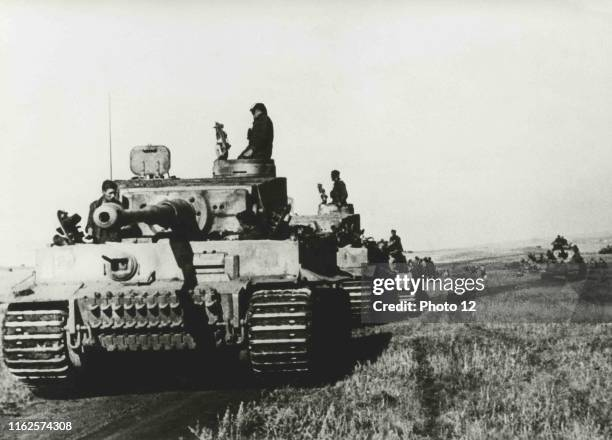

The Tiger
El tanque Tiger (oficialmente Panzerkampfwagen VI Tiger) fue un tanque pesado alemán desarrollado en 1941 por la empresa Henschel y utilizado por la Alemania nazi durante la Segunda Guerra Mundial.

Razones de desarollo
Un "vehículo de ruptura" (Durchbruchwagen) capaz de aplastar cualquier defensa enemiga y dominar por completo el campo de batalla mediante fuerza bruta.

Donde se peleo?
El legendario tanque pesado alemán Tiger I (y su sucesor, el Tiger II) combatió en los principales frentes europeos y del norte de África durante la Segunda Guerra Mundial, operando activamente entre 1942 y 1945.